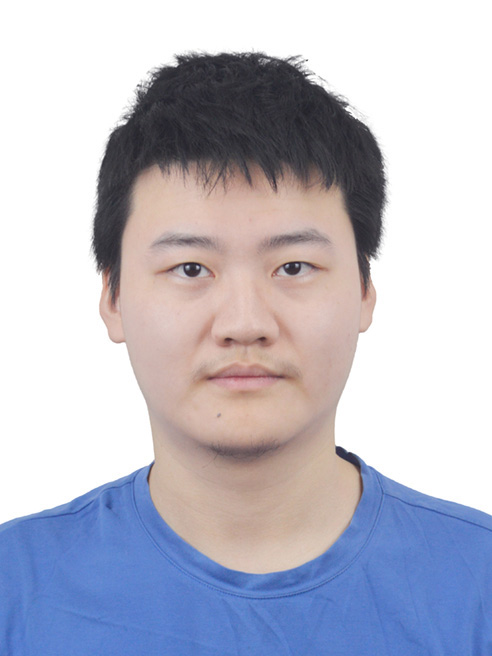

|
Xie, Hao (谢昊)
|
 |
Undergraduate,
School of Science and Engineering,
The Chinese University of Hong Kong, Shenzhen
2001 Longxiang Boulevard, Longgang District,
Shenzhen, China
E-mail: haoxie@link.cuhk.edu.cn
|
About me
I shall receive the B.S. degree from the Chinese University of Hong Kong, Shenzhen, in 2023.
Research
My research interests are mainly on computational mathematics, including:
Image Processing
Numerical Analysis
Project
Some projects done by me during undergraduate courses:
Some projects done by my team in the modeling contests:
- Expound Saihanba Forest Farm Improves the Ecological Environment of Local and Surrounding Cities and Simulate to create Saihanbatype Forest Farms in China and North Korea
(With Luo, X. and Xu, X.), APMCM2021, Third Prize.
- A Trading Strategy Using ARIMA and Turtle Trading Principle to Maximize the profit Among Bitcoins, Gold, and Cash
(With Luo, X. and Xu, X.), COMAP MCM2022, Honorable Prize.
Other Honor
- First Prize, selected as a finalist, the Chinese Mathematics Contest, 2021.
|
{kind=link}